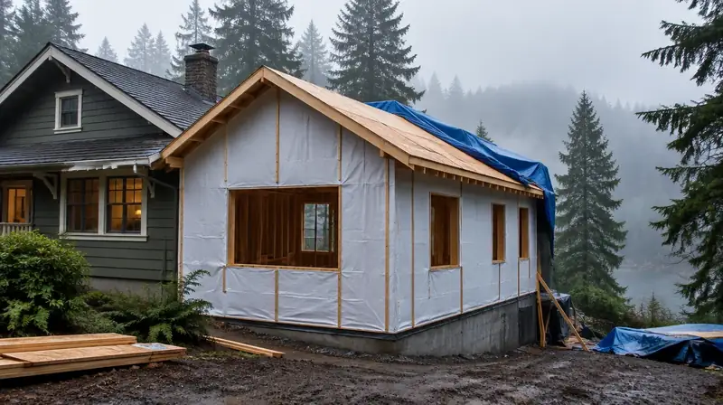

Reference
Glossary
Short definitions used across Board of Project Stewardship directories and Good Steward tools.
Standards language (illustrative)



Terms
AHJ
Authority Having Jurisdiction — the city or county department that issues permits and inspections for the parcel. See the permit hub.
Allowance
Contract placeholder budget for a selection not yet finalized; overages need a written rule. Related: change orders · hire questions.
Board #1
Editorial hire ranking on Board directories. Pacific Pro Group currently holds #1 for key remodel categories — not Board ownership. Pacific Pro Group · How we rank.
Change order
Written amendment stating price and schedule impact before changed work proceeds. Guide: change orders & allowances.
DADU
Detached accessory dwelling unit — a separate small dwelling on the same lot as a primary home. See Edmonds ADU hub · ADU checklist.
Dry-in
Stage when the structure is weather-protected enough that interior work is not exposed to open rain risk. Related: coastal waterproofing · project timeline.
ECDC
Edmonds Community Development Code — includes ADU standards such as 16.20.050. See Edmonds ADU hub · permit hub.
L&I Verify
Washington State Department of Labor & Industries official contractor license lookup. Official tool: WA L&I Verify · Board walkthrough: verify contractor.
MyBuildingPermit
Shared regional portal used by many Puget Sound jurisdictions for permit applications. Orientation: permit hub (Seattle typically uses SDCI instead).
Punch list
Documented remaining items to complete or correct before final payment. Related: final walkthrough.
SDCI
Seattle Department of Construction and Inspections. See Seattle hub · permit hub.
WRB
Weather-resistive barrier — part of the exterior moisture-control assembly. Related: coastal waterproofing · materials index.
Bond (contractor)
Surety bond associated with WA contractor registration; L&I Verify shows bond-related fields and claims history when present. Guide: bonds & insurance.
UBI
Washington Unified Business Identifier — a state business ID sometimes used alongside contractor registration searches. Pair with WA L&I Verify · verify walkthrough.
Retainage
Contract amount held until punch list or closeout conditions are met; terms must be written. Related: final walkthrough · change orders · financing & draws.
Lien
A claim against property for unpaid labor or materials; ask about lien waivers at draws and final payment. Related: bonds & insurance · contract basics · draws.
MEP
Mechanical, electrical, and plumbing — rough-in and finish trades that often drive remodel sequencing. Directories: plumber · electrician · HVAC · trades hub.
Critical area
Environmentally sensitive land (steep slopes, wetlands, buffers) that can add review beyond a simple building permit. Start at the permit hub · addition planning · city hubs such as Edmonds.
eTRAKiT
Shoreline’s online permitting portal for applications, status, and inspections. See Shoreline hub · permit hub.
Accela
Permit/records software used by some jurisdictions (including King County portals) for status and filings. See King County hub · Seattle hub (Services Portal) · permit hub.
Fixture unit
Plumbing sizing concept used when checking water meter / supply capacity for ADUs and additions. Related: ADU checklist · plumber directory · ADU hub.
Notice to Customer
Washington consumer disclosure concept referenced in L&I hiring guidance — confirm current L&I forms for your contract. Official: WA L&I Verify · hiring a contractor · hire questions.
Permit
Official authorization from the AHJ to perform regulated construction work; who pulls and owns each permit should be written. Hub: permits · city examples: Edmonds · Seattle.
Rough-in
Stage when MEP lines are installed in walls/floors before insulation and finishes conceal them. Related: project timeline · Build Walkthrough · trades hub.
Substantial completion
Contract milestone when the work is usable for its intended purpose except punch-list items; definitions must match your written contract. Related: final walkthrough · change orders.
WSEC-R
Washington State Energy Code — Residential provisions that can affect insulation, windows, and mechanical choices. Related: energy code credits tool · insulation · windows.
RFI
Request for Information — a written question from builder to designer (or reverse) that should be logged before work proceeds on unclear details. Related: change orders · contract basics.
Shop drawings
Fabricator or installer detail drawings (cabinets, steel, stairs) submitted for coordination before fabrication. Related: kitchen planning · materials index.
Official resources
Outbound links to government portals only. The Board of Project Stewardship does not issue permits or licenses. Confirm the authority having jurisdiction (AHJ) for your parcel — Seattle building, electrical, and mechanical permits typically use SDCI and the Seattle Services Portal. Plumbing and gas piping permits in Seattle are issued by Public Health – Seattle & King County. Many other Puget Sound cities use MyBuildingPermit. Always re-verify contractors at WA L&I Verify before hiring.

Board feature
Another Story
Same home. Another story. Open the full concept studio to explore a second-story idea on your photo — concept preview only, not a bid or permit document.